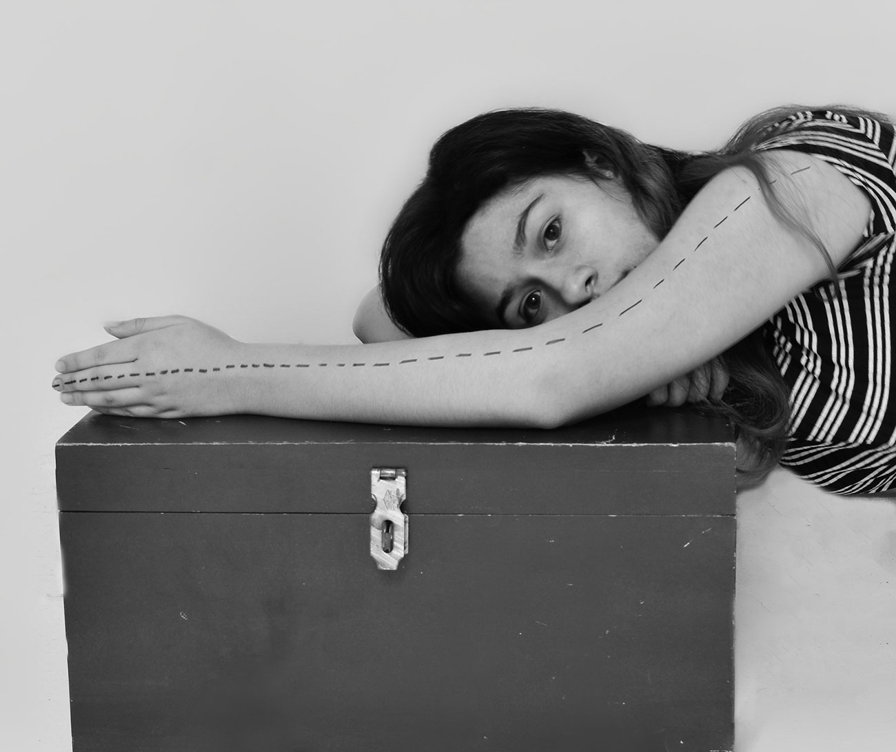
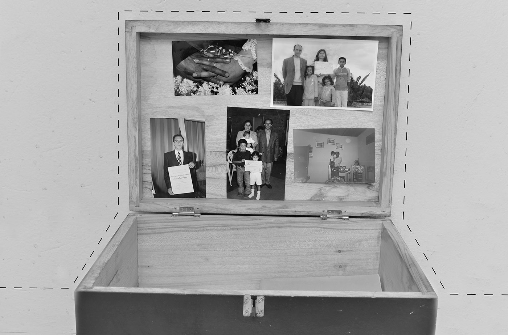
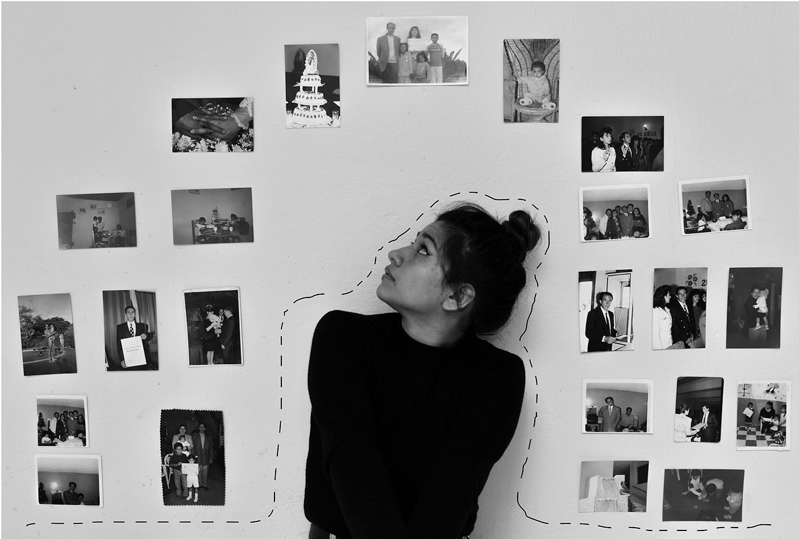
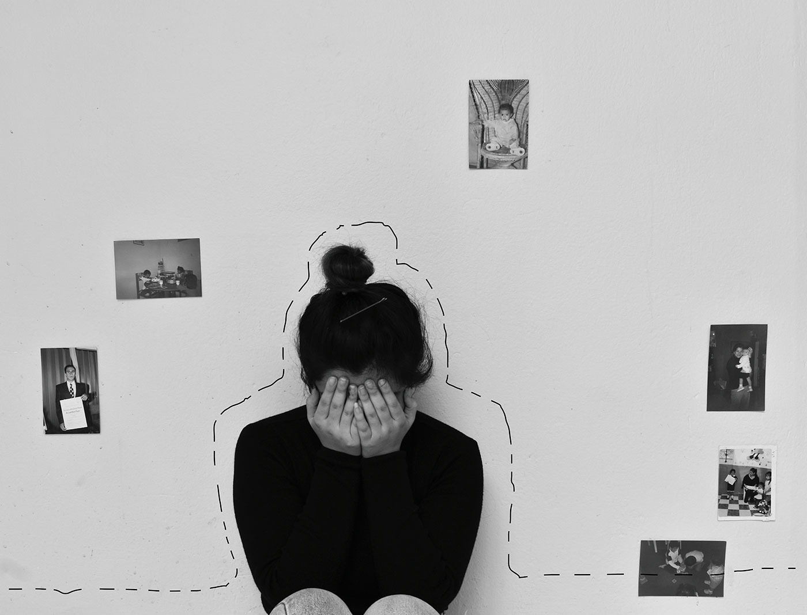
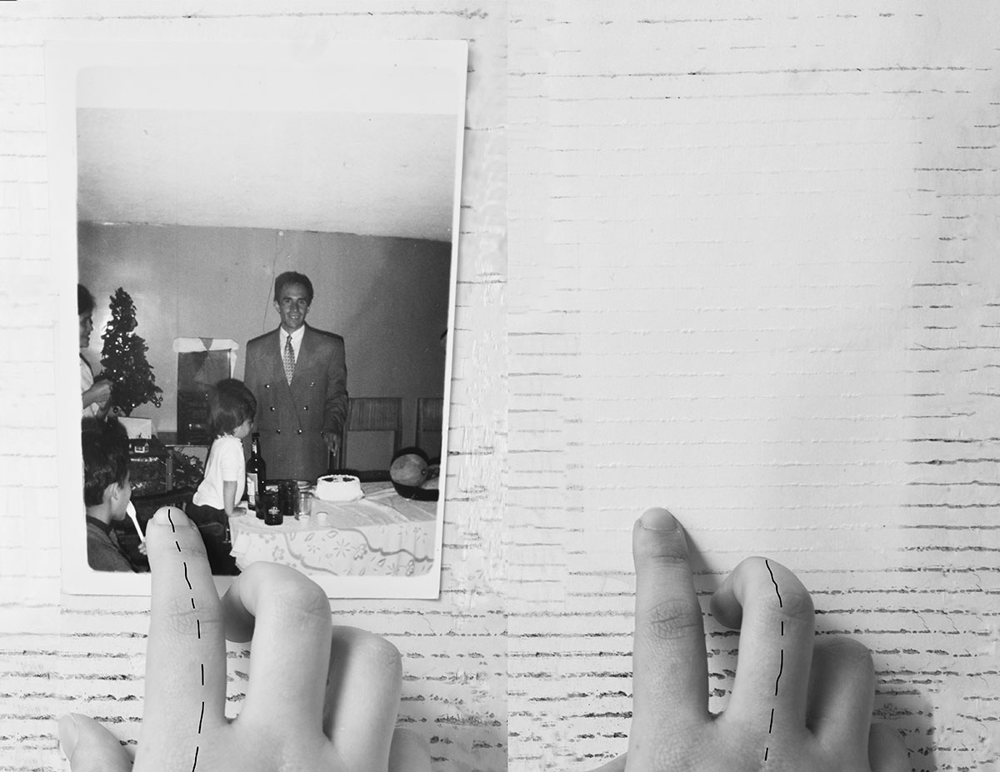

IF
Papá no está siempre con nosotros, si papá tuviese que ser descrito en una palabra, tendría que ser intermitente, de pequeña puedes extrañarlo porque parece un súper héroe que viene a salvarte de tu malvada madre, que viene sin falta por tu cumpleaños y te invita a un lugar que está a dos horas de tu casa, vas con tu hermana de vacaciones. Lo malo de crecer es que tus fantasías no pueden existir más y tu papá no es un héroe, tu papá es intermitente viene y va, no es el ser perfecto que venerabas y al único que le rezabas, tu mamá no es una villana y catalogándolo as no podría haber villanos y héroes en tu vida porque ya estás grande.
Resulta que unas veces más se ha quedado con su familia, teniendo en cuenta, que hace mucho tiempo no vivíamos todos en una casa, porque nos fragmentamos como un vidrio roto, y las piezas se mueven, el espejo sigue roto, pero está junto.
Vino a visitarnos y por el confinamiento, ha pasado dos meses con nosotros, durmiendo en la misma con mi mamá, comiendo en la mesa con sus tres hijos, recuerdo una vez en esas noches de cena que mi hermano le dijo que él tenía como una barra de tiempo en familia cuando esta se llenaba se cansaba y tenía que irse, pensé que reiría pero se quedó pensando, no sé si fue triste o decepcionante pero las dos cosas llevan a lo mismo y la realidad de que mi papá es más una persona solitaria, no entiendo el amor que se tienen con mamá, o si es amor o solo los une los años que duraron juntos y tres hijos que ya no son pequeños. Puedes acostumbrarte a, escucharlo hablar fuerte mientras dicta una clase, luego murmurando y apretando la quijada, lo hace cuando está enojado. Se va hoy, resulta extraño decir que está feliz, parece feliz, porque puede irse a su burbuja, a su espacio y descansar, trato de imaginar, como se siente o si leo sus actitudes completamente erradas, es diferente, malgeniado, gracioso, cariñoso, y puedo llegar a decir que está en su mejor etapa, incluso cuando sigue bifurcándose en el camino, abrieron el portal de buses y ya puede irse, ha empacado la maleta un día antes y se ha levantado a las seis de la mañana, una mañana fría, ha desayunado, a las ocho y media, revisado su celular, mencionado que quiere pasar por la notaria. Quisiera decir que ya no voy a extrañar la lluvia porque ha llovido seguido pero cuando pasa un tiempo y ya no vuelve la extraño, porque es vital que llueva, así es papá supongo, unos días llueve mucho, está y luego se va, intermitente.

Ha comprado y empacado, ha dormido y comido, lejos de no quererlo, incluso ha sacado a pasear al perro, podríamos decir que no es mal papá que es un ser humano, que no logro entender pero que amo, que ha hecho cosas que lastiman a mamá y ella después de un tiempo ha dejado que vuelva, es de esas personas que por más que intentes no quererlas no vas a poder porque tu idealización no se ha acabado, no puedes dejar de quererle aunque a los siete años un día mamá haya estado llorando porque no había enviado dinero para comer, o cuando te enteraste de sus peores cosas, para ti, no sabes y hasta cierto punto fue un desconocido amado, aceptado a pesar de todo, antes le daba abrazos de un minuto porque según un dato científico pasaba algo, realmente no me acuerdo, luego yo era la que se lo recordaba, ahora no los has abrazado más de dos veces, pero si observado y estudiado.
Se va de nuevo y lejos de estar acostumbrada se va por la puerta de la casa con su maleta, esperando llegar a su apartamento donde están sus cosas, su vida supongo, aunque nosotros seamos su vida también. Utilizó mi escritorio, trabajó, discutió con mamá, papá siempre me defiende de todos y me ayuda a lavar la loza cuando me toca, papá es papá y sería imposible no amarlo aún y con las veces que se fue, y se equivocó sigue aquí, y estoy feliz de que lo esté.
